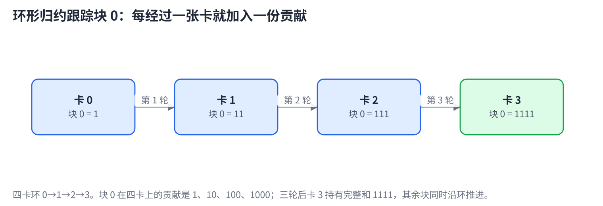
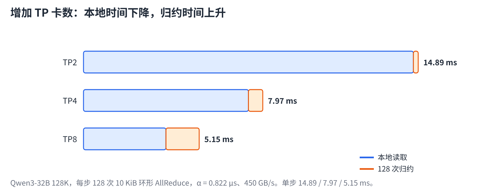
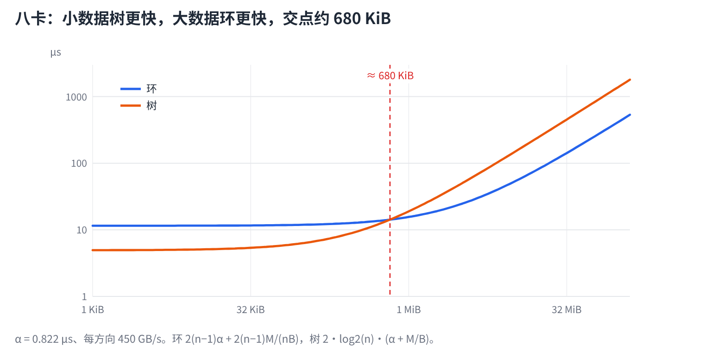
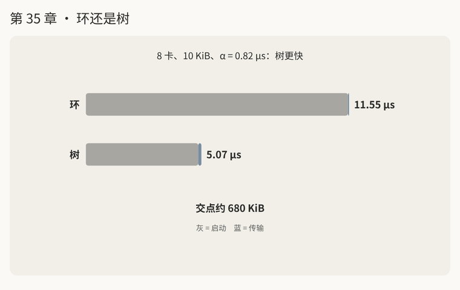

第 35 章 · 集合通信的实现与代价：环、树、通信库和资源竞争
本地运行
git clone https://github.com/wikieden/ai-infra-from-constraints
cd ai-infra-from-constraints/code/notebooks
pip install jupyterlab torch numpy
jupyter lab ch35_collectives.ipynb也可以下载后直接用 VS Code 打开 .ipynb 运行。需要 GPU 的章节在 Colab 里选「代码执行程序 → 更改运行时类型 → GPU」。
本章回答：AllReduce 为什么等于 ReduceScatter 加 AllGather？环形和树形算法各快在哪，交点在哪？八卡 TP 里，带宽翻倍和启动开销减半哪个更有用？通信和计算同时跑，为什么不能把两边单独测的时间相减？
讲解日期：2026-11-24 · 上一章：第 34 章 组合并行与模型规模 · 下一章：第 36 章 超节点的物理组织与内存池
对应原文：materials/ai-infra-book/manuscripts/06-超节点.md§6.4 L464–L607（式 6-9、6-10，图 6-23 到 6-29）
本章缩写：NCCL = NVIDIA Collective Communications Library（NVIDIA 集合通信库）· HCCL = Huawei Collective Communication Library（华为集合通信库）· algbw / busbw = algorithm / bus bandwidth（算法带宽 / 总线带宽）· CCU = Collective Communication Unit（集合通信单元，昇腾）· MSCCL++ = Microsoft 的集合通信库。全部缩写见 缩写与术语表
讲解
第一步：四种集合通信，按开始和结束时各卡有什么来分（2026-11-24）
类比：班级收作业。 每人交一份，老师算出总分发给每人（AllReduce）；每人只拿到某一科的总分（ReduceScatter）；每人把自己那页拼成全班名单发给大家（AllGather）；每人给每个同学各写一张不同的纸条（All-to-All）。
原文 L468–L481：
| 操作 | 开始时各卡 | 结束时各卡 | 用途 |
|---|---|---|---|
| AllReduce | 同一张量的部分结果 | 完整归约结果 | TP 部分和、训练梯度 |
| ReduceScatter | 同一张量的部分结果 | 归约结果的不同分片 | 分片输出、梯度分片 |
| AllGather | 不同分片 | 完整拼接 | 恢复完整输入 |
| All-to-All | 发往不同目的地的数据 | 各源发给本卡的数据 | MoE dispatch / combine |
AllReduce = ReduceScatter（改数值）+ AllGather（改位置）。All-to-All 只搬数据，不会自动按路由权重合并：MoE 的 combine = 回传 + 恢复顺序 + 加权求和。所有卡要等最后一张卡发起才能开始交换：发起时刻差得越多，加快交换本身越没用。
一句话：名字规定算什么、结果落在哪；算法规定分几轮、怎么传。
第二步：环形 AllReduce：\(2(n-1)\) 轮（2026-11-24）
类比：传话游戏。 四个人围成一圈，每轮把手里的纸条传给下一个，接到的人加上自己的数再传；三轮后有一个人手里是全部四个人的和。再转三轮，每人都拿到全部结果。
原文 L487–L509：\(n\) 张卡，每卡部分和 \(M\) 字节，分成 \(n\) 块。块 0 从卡 0 出发，经卡 1、2 到卡 3，贡献 1、10、100、1000 沿途变成 1、11、111、1111。ReduceScatter \(n - 1\) 轮，AllGather 再 \(n - 1\) 轮，每卡共发 \(2(n-1)M/n\)：

图 35-1 · 其余三块同时沿环推进。
代入 Qwen3-32B 128K（原文 L511–L528）：\(M = 10\) KiB，\(B = 450\) GB/s，\(\alpha = 0.822\) μs（MSCCL++ 在 H100 八卡上测得的 NVLink 单向延迟），每步 128 次：
| TP | 本地 | 128 次归约 | 单步 |
|---|---|---|---|
| 1 | 29.35 ms | 0 | 29.35 ms（放不下） |
| 2 | 14.68 ms | 0.21 ms | 14.89 ms |
| 4 | 7.34 ms | 0.64 ms | 7.97 ms |
| 8 | 3.67 ms | 1.48 ms | 5.15 ms |
TP8 一次 11.55 μs 里 11.51 μs 是 14 轮启动，传输只要 0.04 μs。带宽翻倍整步只省约 2.5 μs；α 减半省约 0.74 ms。

图 35-2 · 2→4 卡净省 6.92 ms，4→8 卡只净省 2.83 ms。
一句话：环形把大数据分块并行传，但轮数随卡数线性增长；小数据时时间几乎全是启动开销。
第三步：树形：少轮次，但每轮传整份（2026-11-24）
类比：淘汰赛。 八个人两两比、四个人两两比、两个人比，三轮出冠军；再三轮把消息传回去。轮数少，但每轮都要传整份成绩单。
原文 L530–L540（式 6-10）：
| 八卡 | 环 | 树 |
|---|---|---|
| 10 KiB（decode） | 11.55 μs | 5.07 μs |
| 80 MiB（8192 token prefill） | 0.34 ms | 1.12 ms |
两式相等约在 680 KiB；α 减半时交点移到 340 KiB。

图 35-3 · 对数坐标。decode 在启动主导的一侧，prefill 在带宽主导的一侧。
一句话：小数据选轮次少的（树），大数据选每轮传得少的（环）；交点 ≈ 让两者的 \(\alpha\) 项和 \(M/B\) 项互相抵消。
第四步：通信库、测量和资源竞争（2026-11-24）
类比：快递公司和仓库共用一条马路。 发货车多了，仓库的叉车也开不动了。
通信库（原文 L554–L558）：NCCL / HCCL 先建通信组、分配 rank；调用返回只表示已提交到 stream。组内各卡调用的顺序和数量必须匹配。MoE 的不等长交换用成组的 Send / Recv 或专门的 EP 库（DeepEP）。
两种带宽：\(\mathrm{algbw} = M/T\)，\(\mathrm{busbw} = 2(n-1)M/(nT)\)。两台 HGX H100、16 rank、64 MiB：466.1 μs，algbw 143.99 GB/s，busbw 269.98 GB/s。busbw 是归一化指标，不是每张网卡的实际吞吐。
资源竞争（原文 L560–L579，实验 6-5，四个 CPU 进程、Gloo）：
| 归约数据 | 通信单独 | 计算单独 | 同时：通信 / 计算 | 同时完成 | 省下 |
|---|---|---|---|---|---|
| 4 MiB | 2.67 ms | 11.53 ms | 6.14 / 11.52 ms | 11.58 ms | 2.62 ms（通信被完全藏住） |
| 64 MiB | 36.92 ms | 11.03 ms | 45.21 / 12.89 ms | 45.24 ms | 2.71 ms（远不到 11 ms） |
GPU 上一样：通信线程和通道越多，单独测越快，同时也占了计算的 SM。AutoCCL 在训练过程中带着干扰调优，AllGather 从 18.26 提高到 32.44 GB/s；调优额外花 \(S\)、每次省 \(\Delta\)，要 \(S/\Delta\) 次才回本。
三种改法（原文 L583–L597）：
- 融合：归约后接残差和 RMSNorm 放一个 kernel；但顺序不能变：\(\operatorname{RMSNorm}([1, 0] + [0, 1]) = [1, 1]\)，分别归一化再相加是 \([\sqrt2, \sqrt2]\)。
- 加速器发起：kernel 算完直接发通信，省主机往返（DeepEP 低延迟 kernel、GPUDirect Async）。
- 专用卸载：复制引擎、CCU、网卡处理器做搬移和归约，腾出 SM。
| 谁发起 | 控制路径穿 PCIe | 占用 |
|---|---|---|
| CPU 代理线程 | 3 次 | CPU 核，每秒请求数有限 |
| GPU 的 SM | 2 次 | 一部分 SM |
| 网卡上的处理器（BlueField） | 0 次 | 网卡的核 |
场景代码：用 nccl-tests 测 AllReduce，看 algbw 和 busbw 两列（真实命令）：
./build/all_reduce_perf -b 8K -e 128M -f 2 -g 8 # 单机八卡，8 KiB 到 128 MiB 每次翻倍
补基础：集合通信原语见《PyTorch 从里到外》第 17 章。
一句话：单独测得的通信带宽不等于并发时的；评价重叠要比同时运行的完成时间，不能把各自单独测的相减。
动画演示：环还是树

可交互版：animations/35-collectives.html（滑块：数据量 1 KiB–128 MiB；每轮开销 α 0.2–4 μs；卡数 4 / 8 / 16）。
怎么看：
- 两根横条分别是环和树的时间，各分成启动（灰）和传输（蓝）两段（第二、三步）；
- 右边标出当前更快的一种和交点；
- 播放时 10 KiB → 160 KiB → 680 KiB → 80 MiB：树领先 → 打平 → 环领先；
- 把 α 调小，交点左移。
练习与作答记录
题 1（第二步）：16 卡环形 AllReduce，\(M = 1\) MiB，\(\alpha = 1\) μs，\(B = 400\) GB/s。多少轮？启动和传输各多少？
作答记录：（待作答）
题 2（第三步）：同样 16 卡、\(\alpha = 1\) μs、\(B = 400\) GB/s，树形算法和环形算法在多大数据量时一样快？
作答记录：（待作答）
题 3（第四步）：8 rank 的 AllReduce，每卡 256 MiB，用时 2.0 ms。algbw 和 busbw 各是多少？
作答记录：（待作答）
原书实验 6-4、6-5（L542、L599）。想多练可以做。
口诀
收作业四种法：总分给每人、一科给一人、名单拼全、纸条各写；
传话围一圈，转两圈人人都有；小数据时全在喊开始；
淘汰赛轮少，但每轮传整份；六百八十 KiB 换手；
快递车和叉车共一条路，各自单测的时间不能相减。
本章复习卡片
I130（四种集合通信、AllReduce = RS + AG、MoE combine 不等于 AllReduce）、I131（环形 \(2(n-1)\alpha + 2(n-1)M/(nB)\)、TP8 11.55 μs、α 减半 vs 带宽翻倍）、I132（树形与 680 KiB 交点、busbw、资源竞争与三种改法）。练习做完后，按答错、卡住的地方再补。
附录 · 延伸阅读
留给以后深入学习用，不影响本章主线。★ 是建议先读的。
推荐阅读
| 读什么 | 读哪里 | 读它为了什么 |
|---|---|---|
| ★ AII 第 6 章 | §6.4 L464–L607 | 本章原文 |
| ★ NCCL 文档、nccl-tests 的 PERFORMANCE.md | algbw / busbw 定义 | 测量口径 |
| Thakur 等，Optimization of Collective Communication Operations in MPICH（2005） | 环、树、递归加倍 | 算法经典 |
| MSCCL++ 论文 | H100 测量 | α 的来源（原文 [^ring]） |
| AutoCCL（NSDI 2025） | 方法一节 | 带干扰的调优 |
| DeepEP | 低延迟 kernel | GPU 发起的 EP 通信 |
数学原理
- α–β 模型：每轮 \(\alpha + m/B\)；环 \(2(n-1)\) 轮各 \(M/n\)，树 \(2\log_2 n\) 轮各 \(M\)。
- 交点：\(2(n-1)\alpha + \frac{2(n-1)}{n}\frac{M}{B} = 2\log_2 n\,(\alpha + \frac{M}{B})\) 解出 \(M\)。
- 非线性不交换：RMSNorm 不能和求和换序。
公式清单
| 公式 | 意思 |
|---|---|
| \(T_{\mathrm{ring}} = 2(n-1)\alpha + 2(n-1)M/(nB)\) | 式 (6-9) |
| \(T_{\mathrm{tree}} = 2\log_2 n(\alpha + M/B)\) | 式 (6-10) |
| \(\mathrm{busbw} = \mathrm{algbw} \cdot 2(n-1)/n\) | NCCL 的两种带宽 |
| 回本调用数 \(= S/\Delta\) | 调优成本 |
代码对照：把本章的数字用代码算一遍
代码
ai-infra/solutions/chapter-code/ch35_collectives.py，测试tests/test_ch35.py：
bash cd ai-infra/solutions/chapter-code uv run python ch35_collectives.py uv run pytest tests/test_ch35.py
| 讲义 | 写法 | 跑出来 |
|---|---|---|
| 第二步 | ring_ar(8, 10 * KiB)、tp_step(p) |
11.55 μs；14.89 / 7.97 / 5.15 ms |
| 第三步 | tree_ar(8, M)、ring_tree_crossover() |
5.07 μs；680 KiB |
| 第四步 | busbw(143.99, 16) |
269.98 GB/s |
代码里才看得到的 3 件事：
ring_tree_crossover的解析式：\(M^* = \frac{[2(n-1) - 2\log_2 n]\alpha B}{2\log_2 n - 2(n-1)/n}\)，八卡是 \(8\alpha B/4.25\)。- 树的时间模型是未分段的二项树；实际 NCCL 的树会分段流水，大数据时比这个快。
- α 减半那行同时把交点减半：交点和 α 成正比。
自己改一改（不影响练习答案）：
- 加一个"递归加倍"算法：\(\log_2 n\) 轮、每轮 \(M\)，和环、树比较。
- 把
tp_step的 \(M\) 改成 4 个 token（40 KiB），TP8 的单步变多少？ - 画出 \(n\) = 4、8、16、32 时的交点。